P2H10S 在两块板上点估计都高于 base，代价是 48 至 70° 大弯走宽；route dead-band hinge 停在 pilot gate；PAI 只有描述性读数P2H10-F。最接近的 P2H10S 在两块板上点估计都在 base 之上：nuPlan 700 scene 4 seed 配对 +0.0040，在 base 自己的 seed spread 之内；PAI 60 scene 在 serving（JEV_VCONT=1.0 JEV_LEAD=1）下 0.4211 对 0.3545，plain driver 下 0.2780 对 0.2026，PAI 数字按第十三节更正后的分解读。代价是 48 至 70° 右转上 plan 转得不够的 corridor zero（nuPlan 新增 4 个）。针对它的第四个变体 P2H10R（route dead-band hinge）在 pilot gate 的 corridor 线上不过（第十二节）。PAI 的读数是描述性的，登记的 PAI 读数不存在，60 个 PAI scene 已是 development scene。以下 G1 / G2 与前三个臂的表是早期读数。P2H10S 当时停在 G3 (b)，依据是 seed 0 上 149 对 148 差一个 token；在评分所用的 plan 上是 135 对 140，G3 全部过线，停止的依据不成立。登记的闭环读数没有做，是否补做由用户决定。留出 log 上的读数、benchmark 分数与全部闭环分数不受影响。总表：experiments/body1/results/navtest_warp.md。| 臂（chunk，P2H10-F-s0，单 seed） | n | 均分 基线 → 开关 | Δ [95% CI，按 log] | zeros | 碰撞 / offroad / corridor | slow | > 45° 均分，zeros |
|---|---|---|---|---|---|---|---|
| 4.1 无记忆刹停（chunk0） | 234 | 0.9518 → 0.9451 | −0.0067 [−0.0159, +0.0011] | 7 → 5 | 4/2/1 → 2/2/1 | 43 → 50 | 0.7898 → 0.8186，4 → 3 |
| 4.2 单决策横向 re-plan（chunk1） | 233 | 0.9411 → 0.9368 | −0.0043 [−0.0172, +0.0112] | 10 → 11 | 2/5/3 → 2/7/2 | 37 → 37 | 0.8298 → 0.8854，3 → 2 |
后续（第八至十三节）：loss 臂 progress 损失的诊断（决策 230）、stage 2 在 CARLA 上被零生成 pre-check 关闭（决策 231）、补记 6 的形状-only 变体 P2H10S 当时停在 G3 (b)（决策 232；该读数已更正为过线，见页首更正），以及它的 4-seed 描述性闭环读数（第十一节，不能晋级）、补记 7 的 route hinge 在 pilot gate 停止（第十二节，决策 234）、PAI 上的描述性读数（第十三节，决策 235）。以下表和结论块为前三个臂的读数。
来源：experiments/body1/results/{taxonomy,s0_gate,stop_closed_loop,replan_closed_loop}.md，预登记 experiments/body1/plans/2026-10-10-body1-prereg.md，决策 223、224、225。以下 L1 / L2 / L3 为登记线：L1 目标类 zeros 下降；L2 均分差 ≥ 0 且按 log 聚类的 95% 下界 > −0.005；L3 slow scene ≤ 1.1 × 基线。
navtrain 103 288 个 token、1 192 个 log，manoeuvre 互斥（launch、stop、turn 20-45、turn > 45、go-around、straight），三个 hazard flag（in-path、side、boundary）分开存。用户类允许多 bit，row balance 用 primary class（1 > 2 > 3）。
| 类 | token（bit / primary） | hold logs（primary） | train logs（primary） |
|---|---|---|---|
| 1 前方障碍（in-path 或 go-around） | 21 238 / 21 238 | 2 137 | 19 101 |
| 2 转弯（带 side / boundary flag 的 turn，或 > 45°） | 15 281 / 12 994 | 1 387 | 11 607 |
| 3 离开路面（straight / launch 带 boundary flag，或 straight 无 flag） | 40 795 / 38 087 | 4 124 | 33 963 |
| other | / 30 969 | 3 278 | 27 691 |
| all | / 103 288 | 10 926 | 92 362 |
> 45° 桶 10 773 个 token（10 004 tagged turn > 45，761 launch，8 stop），其中 1 173 个在 hold logs。Go-around 用常曲率延拓代替 lane，在弯道上有可见的 false positive（taxonomy.md 偏离 1）。
Row generator。行 = （状态，query 轨迹，标签）。状态 242 432 个：日志上 103 288、ot1（±0.5 m / ±2° 离轨）69 572、yr1（yaw-rate 离轨）69 572；每个状态 24 条 query（学生两个 seed 的 plan、shipped plan、日志未来，lat / head / gain / arc / stop 各 4 条），共 5 818 368 行。标签是 ego 框沿 query 的扫掠对同一时刻 agent 框与可行驶 raster 的接触 0 / 1、首次接触的时间与弧长、净空、横向缺口。agent 框、raster、日志未来只作标签。扫掠模块与 AgentHinge 的接触判定 100% 一致（7.0 M 个 valid pair），与 Hinge.margins 符号 100% 一致。加权按（类，接触类型）格等质量，rear-end-only 行和 class other 权重 0（w3）。
| 状态族 | 状态 | 行 | hold-log 行 |
|---|---|---|---|
| log | 103 288 | 2 478 912 | 262 224 |
| ot1 | 69 572 | 1 669 728 | 176 784 |
| yr1 | 69 572 | 1 669 728 | 176 784 |
学生自己的 plan 在 hold logs（121 个 log，25 658 个状态）上的 own-plan 正例：agent own0 / own1 为 462 / 449（64 / 63 个 log），boundary 1 494 / 1 495（95 / 95 个 log）；> 45° 桶 agent 59 / 56，boundary 248 / 250。每类至少 30 个两种正例，G1 在三类上都是有闸门的读数。
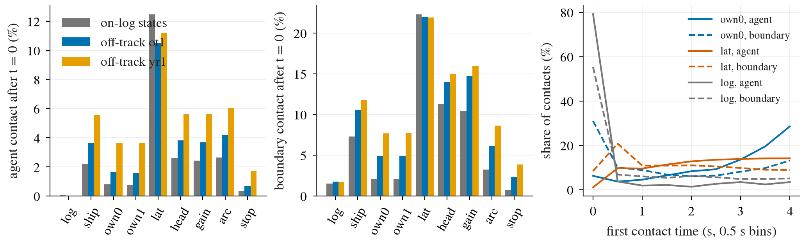
扫掠对日志未来的 agent contact 率 0.05%（决策 158 预期约 0.3%）；日志未来的 boundary contact 2.0%，是浅接触（中位深度 0.10 m）。
Head：输入只有 8 个 slot 的 view_39 视觉 token、20 维 ego 向量、一条 8 点 query 轨迹；4.4 M 参数，每个 sweep step 对 scene memory 做 cross-attention，输出 agent / boundary contact logit 与首次接触的弧长和时间。训练只用 navtrain（拟合 955 个 log，192 287 个状态），hold logs 从不加载；两个 seed。
| 子集 | agent AUC | 正例 | boundary AUC | 正例 |
|---|---|---|---|---|
| pooled | 0.905 [0.868, 0.934] | 911（64 log） | 0.978 [0.969, 0.985] | 1 090（82 log） |
| class 1 前方障碍 | 0.835 [0.727, 0.924] | 238（30 log） | 0.977 [0.953, 0.994] | 132 |
| class 2 转弯 | 0.836 [0.740, 0.904] | 138（21 log） | 0.950 [0.922, 0.970] | 389 |
| class 3 离开路面 | 0.957 [0.938, 0.971] | 394（53 log） | 0.986 [0.979, 0.992] | 398 |
| other（无线） | 0.935 [0.890, 0.977] | 141 | 0.980 [0.960, 0.994] | 171 |
| > 45°（无线） | 0.819 [0.716, 0.925] | 115（15 log） | 0.941 [0.912, 0.964] | 285（31 log） |
| on-log 状态 | 0.852 [0.750, 0.929] | 137 | 0.972 [0.956, 0.984] | 165 |
| ot1 状态 | 0.902 [0.848, 0.939] | 227 | 0.975 [0.961, 0.986] | 268 |
| yr1 状态 | 0.903 [0.878, 0.925] | 547 | 0.977 [0.967, 0.984] | 657 |
线 0.80 在 pooled 与三个用户类上两种接触都过；class 1 与 2 的 agent 下界只有 0.73 / 0.74（正例分布在 30 / 21 个 log）。同样的行上，无视觉的同款 head 为 agent 0.770 / boundary 0.779（> 45° 0.616 / 0.743）；plan 2 s 横向 std 为 0.749 / 0.809（> 45° 0.708 / 0.597）；ego 速度 0.528 / 0.527。
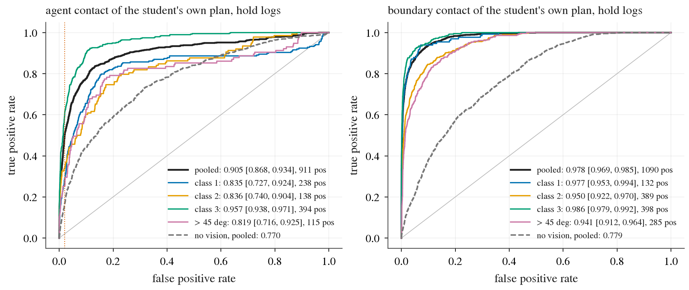
| 分数 | AUC | 过线（≥ 0.80 且下界 > 0.70） |
|---|---|---|
| S0，两 seed 平均 | 0.885 [0.774, 0.969] | 过 |
| S0 seed 0 | 0.883 [0.792, 0.959] | 过 |
| S0 seed 1 | 0.830 [0.680, 0.959] | 不过（下界） |
| 无视觉 head | 0.655 [0.530, 0.767] | 不过 |
| 参考（决策 220） | simulator 当前框 0.728，最好的冻结几何头 0.718，plan 横向 std 0.786 [0.738, 0.865] | |
G2 的过线依赖两 seed 平均（读数前写进脚本）；22 个 rollout 只在 9 个 log 里，不对 seed 稳健。学习曲线 25% / 50% / 100% 的 log：agent 0.857 → 0.870 → 0.898，boundary 0.926 → 0.963 → 0.971，agent 一半仍在涨。
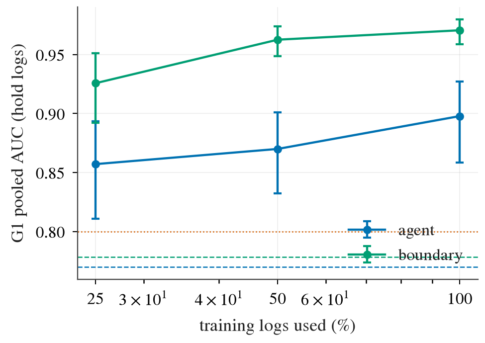
刹停工作点。阈值在 hold logs 上取，使 50 265 个干净 own-plan 决策的 2% 被 flag（logit 0.408，p = 0.60）：agent contact 召回 0.508 [0.418, 0.588]（class 1 / 2 / 3：0.41 / 0.33 / 0.61），真阳性上首次接触弧长误差中位 1.83 m、p90 7.39 m。同一阈值搬到 G2：干净决策触发 2.6%，122 个正例召回 0.434，22 个碰撞 rollout 里 17 个至少触发一次。
规则（补记 2）。served plan 的 agent logit ≥ 0.408 时，沿原路径重定时，在预测的首次接触弧长前 m = 2 m 停住（接触弧长取回归值与预测净空 < 0.25 m 的第一个 0.5 s 区间起点的较小者）；每次决策独立，无 latch、无最低车速。开关关闭时 2 220 个 replay 决策逐位相同。
one-chunk 检查（chunk0，234 scene，2 340 个 drive call）。通过：rollout 完整，drive p50 / p90 29.4 / 47.8 ms（基线 21.5 / 34.5），flag 率 86 / 2 340 = 3.68%（36 个 scene，15.4%）。不过两项：flag 后 0.5 s 内变慢的比例 57 / 78 = 73%（线 80%；其中 43 个是远刹停点，按规则先跟 plan）；出现一次 −8.53 m/s² 的加速度指令（线 −8.5；该 scene 在 decision 0、1、2 连续被 flag（8 m/s、d = 0），每次重新锚定一个 6 m/s² 的停车，reference 的 6 m/s² 上限管不住 MPC 追位置差）。无 zig-zag。
| Driver | n | 均分 [95% CI，按 log] | score 1 | zeros | 碰撞 | offroad | corridor | slow | progress |
|---|---|---|---|---|---|---|---|---|---|
| P2H10-F-s0（TR1 run） | 234 | 0.9518 [0.9165, 0.9773] | 184 | 7 | 4 | 2 | 1 | 43 | 0.937 |
+ JEV_STOP=2 | 234 | 0.9451 [0.9135, 0.9691] | 179 | 5 | 2 | 2 | 1 | 50 | 0.920 |
| 登记线（仅此 chunk） | 值 | 若按登记读 |
|---|---|---|
| L1 碰撞 zeros | 2 对 4 | 满足 |
| L2 | −0.0067 [−0.0159, +0.0011]（按 log），[−0.0191, +0.0059]（按 scene） | 不满足 |
| L3 slow ≤ 1.1 × 基线 | 50 对 47.3（基线 43） | 不满足 |
| scene | 分数变化 | |
|---|---|---|
| 救回的 at-fault 碰撞 | 2 | 0 → 0.61、0 → 0.69（均事后被追尾，collision_rear = 1，不算 at-fault）；合计 +1.30 |
| false stop（损失 > 0.1 的 flagged scene） | 7 | −0.62、−0.60、−0.59、−0.37、−0.28、−0.22、−0.16；合计 −2.84 |
| 其中另有 22 个 flagged scene | 分数不变 | progress 的 0.8 余量吸收了短刹车 |
| 未触发的 scene | 198 | 分数与基线相同（差 +0.0000） |
flagged 的 36 个 scene 均分 0.7911 对基线 0.8349，progress −0.109；新 zero 为 0。剩下的 2 个碰撞都被触发过：一个按 1 m/s² 下限刹得太轻、flag 在 decision 7–9 消失后撞上排队车，一个只触发了一次。4 个基线碰撞全部被 flag 过。offroad 2、corridor 1 不变，且都没有被 flag。
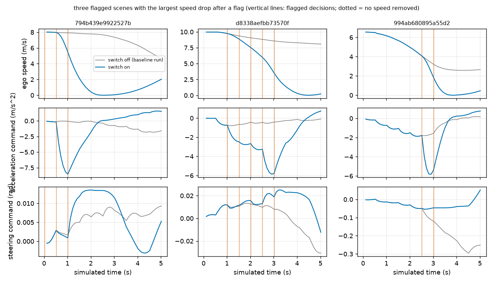
Review strips（seed 0 chunk0，6 个 scene 带 rollout log 重跑，分数四位小数复现；两个 miss 用 chunk run 自己的 log；其他车灰，日志 ego 虚线，基线 ego 橙，开关打开的 ego 蓝，红叉为停止点）：
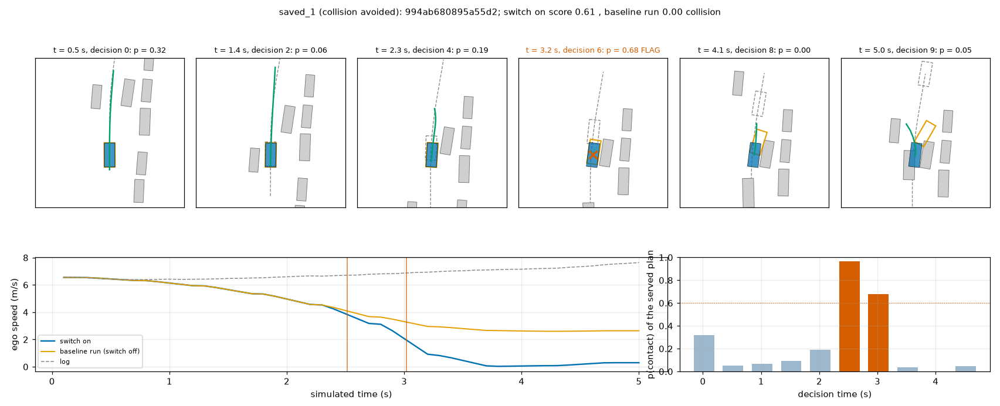
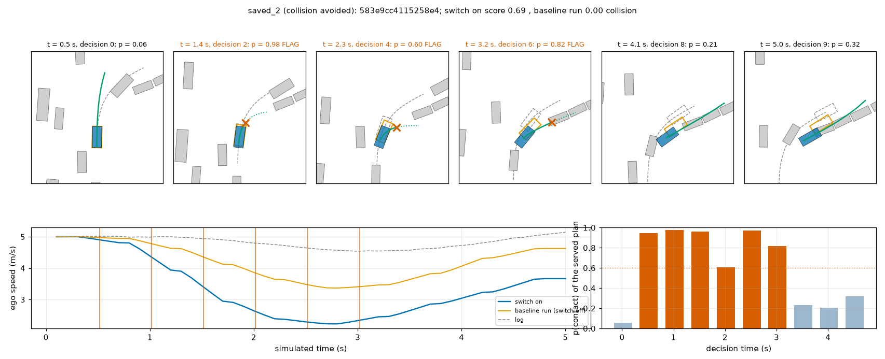
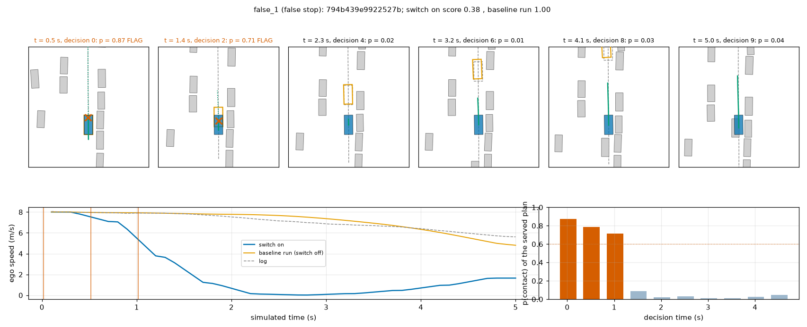
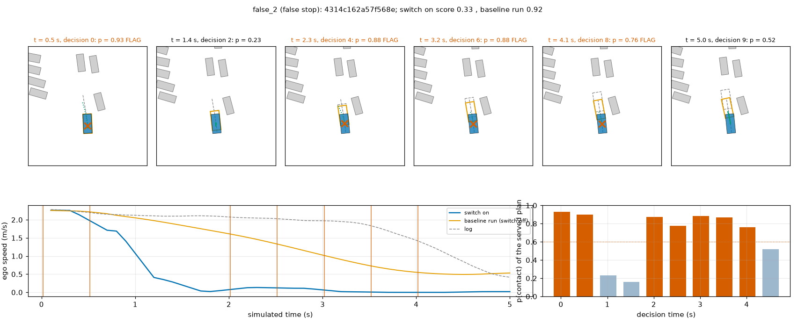
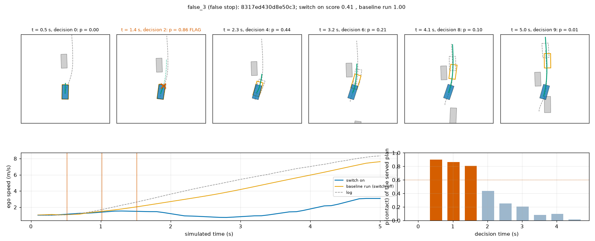
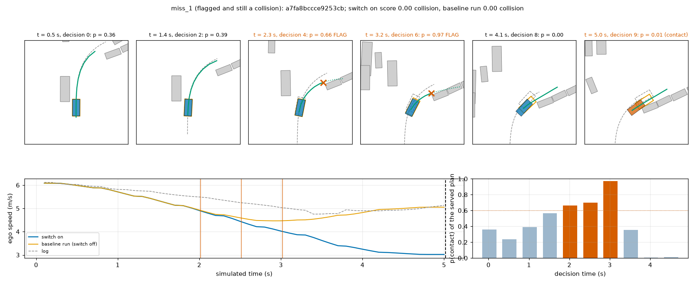
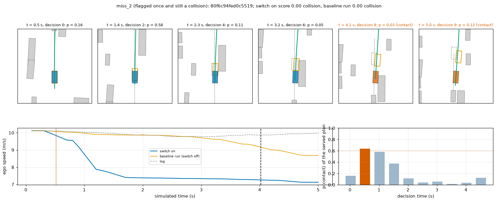
读法：predictor 在闭环里提前看到了真碰撞（4 / 4），丢分来自动作。一次 false stop 约 −0.4，一次救回约 +0.65，逐 scene 的 precision 而不是 recall 决定分数；剩下的 2 个碰撞需要 flag 持续并且停止点被相信。agent-only 的刹停碰不到 offroad / corridor 的 3 个 zero。k = 0 与近静止状态在 head 的训练分布边缘（离轨行只覆盖 > 3 m/s），代价最高的误报出在那里。nuPlan 的碰撞是横向的（决策 219、220：横向缺口中位 0.85 m），所以转 4.2。
规则（补记 3）。候选为 plan 的横向 ramp，±{0.3, 0.6, 0.9, 1.2, 1.5} m，且 |a| ≤ 0.10 × 4 s 弧长（航向偏移 ≤ 5.7°）。flag：plan 的 agent logit ≥ 0.3999 或 boundary logit ≥ 1.8308（干净决策的 98 分位），boundary 可单独触发；候选两个 logit 都低于干净决策 95 分位（agent < −1.7170 且 boundary < −0.5145）算 clear，取最小的 clear 偏移；k = 0 不动；没有 clear 候选时原样 serve，不刹停；上一次偏移的 side 锁定，直到连续 2 个决策原样 serve。
| 集合 | 干净决策 | re-plan | harm（served 造出接触） | 真接触 | flagged | resolved | resolve 率 |
|---|---|---|---|---|---|---|---|
| pooled | 49 232 | 1 213（2.46%） | 3（0.006%）：1 agent，2 boundary | 1 944 | 1 176 | 548（185 agent，363 boundary） | 0.466（占全部真接触 0.282） |
| class 1 | 8 978 | 221 | 0 | 361 | 186 | 67 | 0.360 |
| class 2 | 6 190 | 179 | 1 | 500 | 277 | 128 | 0.462 |
| class 3 | 23 564 | 610 | 0 | 775 | 531 | 282 | 0.531 |
| other | 10 500 | 203 | 2 | 308 | 182 | 71 | 0.390 |
| > 45° | 5 173 | 141 | 0 | 385 | 187 | 75 | 0.401 |
线（读数前写定）：harm ≤ 0.2%，且 5 × harm ≤ resolved；48 个 setting 全部过线，选 resolved − 5 × harm 最大的角（98 / 95 分位）。干净决策平均偏移 0.77 m。768 / 1 944 个真接触没被 flag，503 个被 flag 的没有 clear 候选，125 个被 re-plan 进仍有接触的候选。boundary-only flag 贡献了 548 个 resolved 中的 363 个。
7 项只有第 5 项不过：被 re-plan 的 scene 里新 zero 2 个（offroad、offroad）对去掉 1 个（corridor）。其余通过：re-plan 19 / 2 330 = 0.82%，分布在 19 个 scene（每个一次）；drive p50 / p90 35.4 / 55.1 ms；没有换边；转向反转 sums 10 对 2、每个 scene 最多 2；decision 9 处对日志的航向误差 sd 2.51° 对 2.56°（68 个 log-straight scene 上比值 0.98 [0.92, 1.00]）。after decision 0 共 91 个 flag 决策（45 个 scene），其中 72 个没有 clear 候选：flag 变成偏移 19 / 91。
| Driver | n | 均分 | score 1 | zeros | 碰撞 | offroad | corridor | slow |
|---|---|---|---|---|---|---|---|---|
| P2H10-F-s0（TR1 run） | 233 | 0.9411 | 186 | 10 | 2 | 5 | 3 | 37 |
+ JEV_REPLAN=1 | 233 | 0.9368 | 185 | 11 | 2 | 7 | 2 | 37 |
| 登记线（仅此 chunk） | 值 | 若按登记读 |
|---|---|---|
| L1 目标类 zeros 下降 | 11 对 10 | 不满足 |
| L2 | −0.0043 [−0.0172, +0.0112]（按 log），[−0.0215, +0.0086]（按 scene） | 不满足 |
| L3 slow | 37 对 40.7（基线 37） | 满足 |
未被 re-plan 的 214 个 scene 分数全部相同；变化全部来自 19 个被 re-plan 的 scene：1 升、4 降、14 不变，合计 −1.01（均分 0.7764 对 0.8293）。boundary-only 触发给出了去掉的那个 zero 和新增的两个；agent 触发的 9 个 scene 既没造出也没去掉 zero。
| 去向 | 个数 | 明细 |
|---|---|---|
| 从未被 flag | 5 | 1 个碰撞，4 个 offroad |
| 被 flag 但 1.5 m 内没有 clear 候选 | 2 | 1 个碰撞（decision 3–7 agent flag），1 个 corridor |
| 被 re-plan 一次后仍是 zero | 2 | 1 个 offroad，1 个 corridor |
| 去掉 | 1 | corridor，62° 弯，一次 −1.5 m 偏移（decision 6，boundary flag） |
新增的两个 zero 都是 offroad，都在一次 boundary flag 触发的偏移后：+0.9 m（decision 2，3.4 m/s）和 +1.2 m（decision 6，8.2 m/s）。hold logs 上 boundary AUC 0.978 没有变成闭环 offroad scene 上的召回：5 个 offroad 里 4 个从未被 flag。
19 个被 re-plan 的 scene 在 decision 9 的 heading 与基线 run 平均差 6.6°（sd 12.2，最大 43°），位置最多差 4.1 m，而偏移本身的 ramp 不超过 5.7°。之后每个决策原样 serve plan，但 plan 从偏移产生的新状态续下去，不回到原先那条线（决策 205 的回路）。offline gate 量的是一次 ramp 是否碰东西（3 / 49 232）；闭环里被驾驶的是之后 head 没打过分的 plan，每个被 re-plan 的 scene 造出的接触为 2 / 19，而离线是 3 / 1 213 个决策。
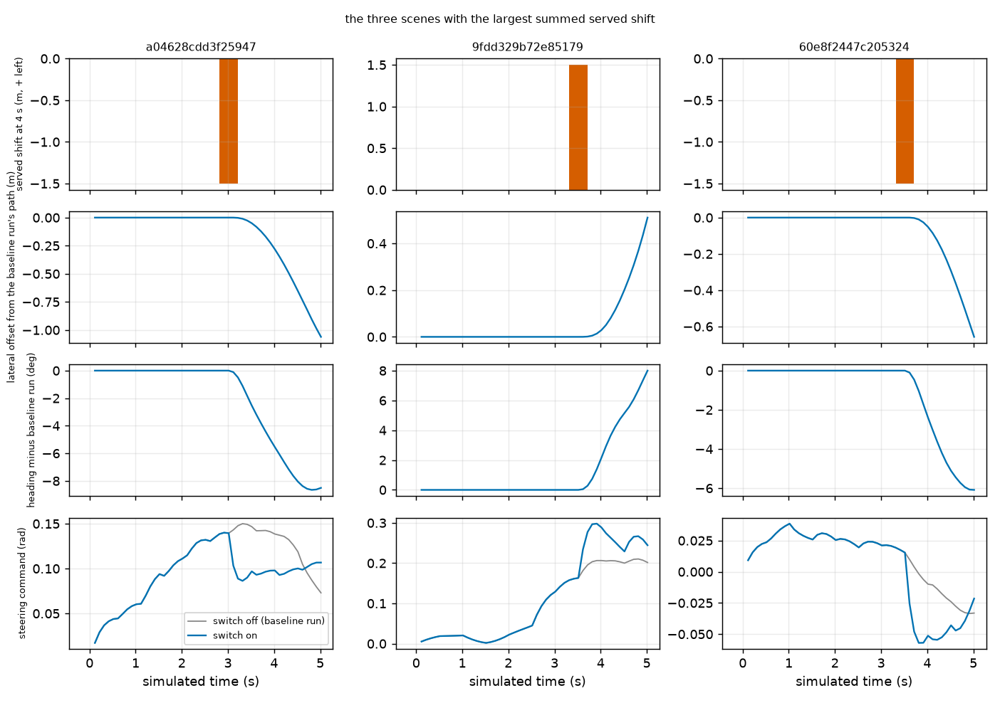
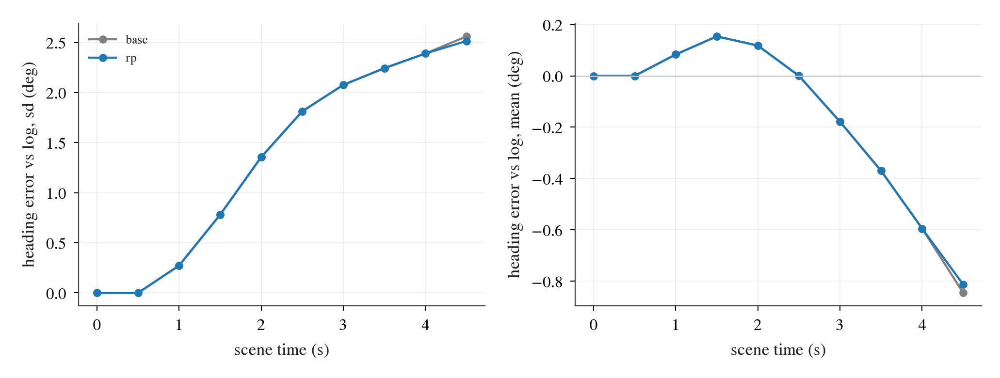
Review strips（chunk1，5 个 scene 带 rollout log 重跑，分数复现；chunk 里只有一个被去掉的 zero，所以只画一个）：
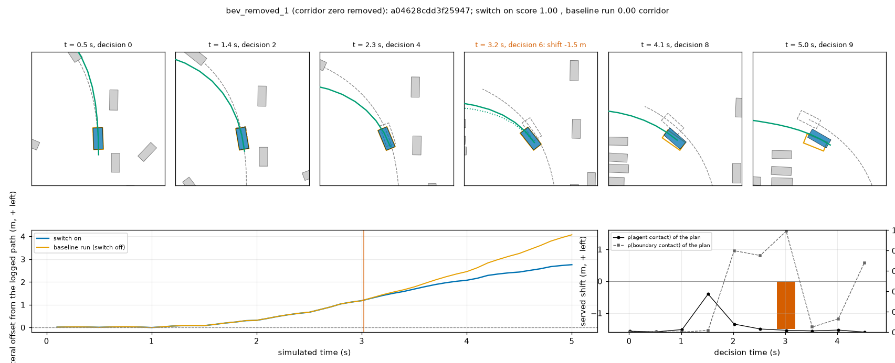
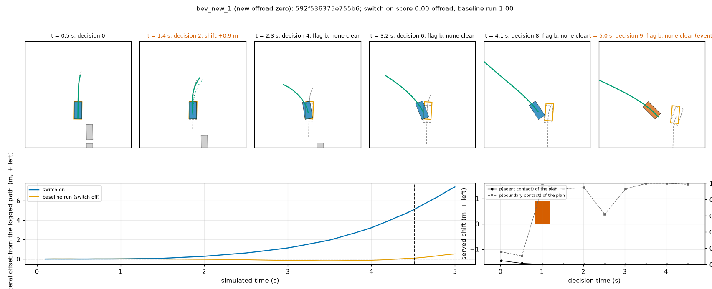
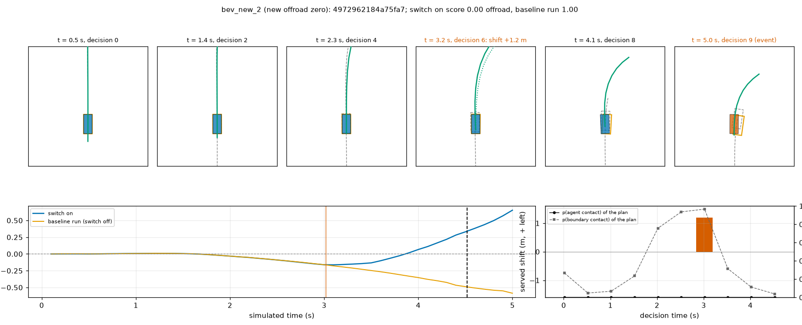
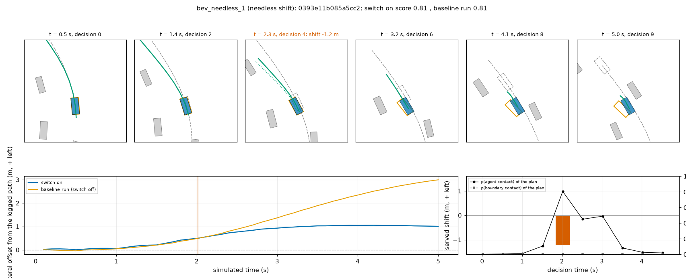
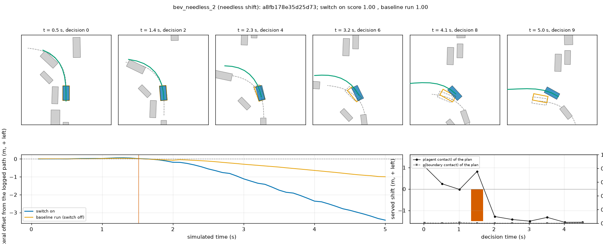
对象是 TR1 的 P2H10-F 两个 seed × 700 scene 的全部 49 个零分（at-fault 碰撞 14、offroad 20、left corridor 15），不训练、不拟合任何东西；simulator 的物体、地图和日志路径只作诊断真值。
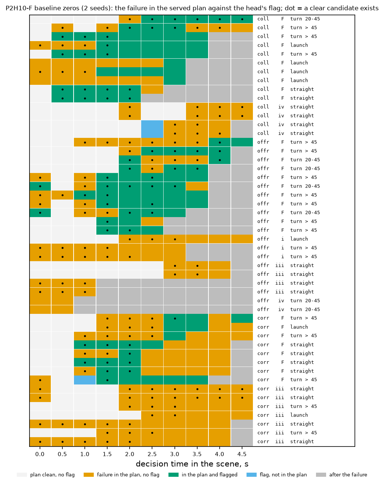
补记 4 的 loss 臂把课放进 plan 本身：学生自己 plan 上的 agent hinge、离轨状态上的 hinge-only 行（新增 bd4 族：航向偏 2 至 8°、横向 0.5 m 内、不设速度下限）、道路 hinge 用 road-and-lane 栅格（项 C，是按本榜 scorer 零分挑的 per-board 成分，已披露）。注意项 C 的图层并不是 scorer 的 road area（scorer 还算 car park 与 generic drivable area），按保守的标签用，不称为 scorer 标签。
| pilot | 读数 | 结果 |
|---|---|---|
| 补记 4（hinge-only 行与 imitation 行等权） | own-plan 正例上的 agent hinge 从 step 201–400 到 2 701–3 000 | 0.1216 → 0.1100，降 9.5%（线 30%）：按登记口径不过；留出 log 上 agent 接触率 −26%、出界率 −17%（CI 不含 0），dev ADE 0.591 对 0.590 m；新项只占总 loss 约 0.5% |
| 补记 5（公开的第二次尝试，只改 hinge-only 行的权重 w，gate 换成结果量且更严；读过一次 hold logs 之后做的） | w ∈ {3, 10} 在训练 log 的验证部分选；hold logs 上读一次 | 选 w = 3（验证部分 agent + boundary 率降 37.2%；w = 10 降 47.4% 但 dev ADE 0.6069 > 0.6013，不合格）；hold logs：agent 0.0136 对 0.0261（−47.7%）、boundary 0.0172 对 0.0275（−37.4%），CI 均不含 0；dev ADE 0.5899 对 0.5913；续接斜率 0.93 对 1.08：gate 过 |
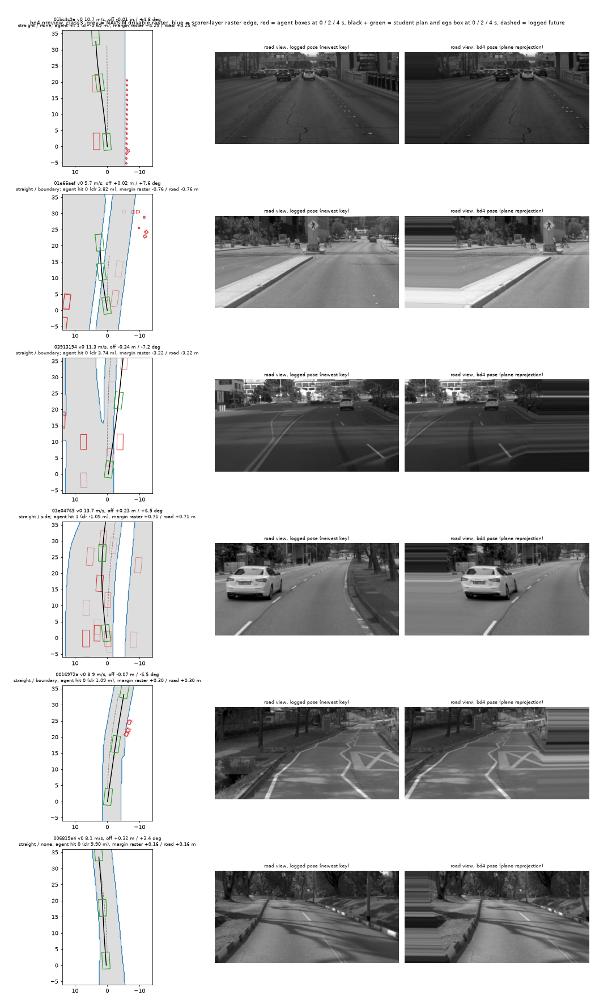
bd4 族 class 3 的六个状态（5.7 至 13.7 m/s，航向偏 −7.2 至 +7.6°）。看重投影后画面的偏移方向与航向偏移相反、padding 带在相机转向的一侧；负的 boundary margin 出现在扫过的车身越过栅格边缘处。| 项 | 线 | seed 0 | seed 1 | 结果 |
|---|---|---|---|---|
| (a) hold logs agent 接触率（30 083 个状态，121 个 log） | 降 ≥ 30%，CI 不含 0 | 0.01403 对 0.02729（−48.6%） | 0.01380 对 0.02666（−48.3%） | 过 |
| (a) hold logs boundary 率 | 降 ≥ 30% | 0.01569 对 0.03377（−53.5%） | 0.01582 对 0.03384（−53.2%） | 过 |
| (b) navtest on-log（12 146 个 token）两率之和 | 两率不升，和降 | 0.04232 对 0.04841（−12.6%） | 0.04084 对 0.04858（−15.9%） | 过（agent 率只降 6–8%，不显著） |
| (c) 续接斜率 alpha_05 | ≤ P2H10-F + 0.05 | 0.833 对 1.028 | 0.827 对 1.037 | 过 |
| (d) navtest EPDMS（两 seed 均值） | ≥ base − 0.3 | 89.19 对 88.67（+0.52 [+0.35, +0.70]） | 过 | |
| (d) > 45° 桶 EPDMS | 报告 | 79.55 对 78.61（+0.93 [+0.28, +1.62]）；inside-cut 4.15% 对 4.78%；cannot-make-turn 2.70% 对 2.60%（不变） | 报告 | |
| dev_drift_off | ≤ 0.30 | 0.0453 | 0.0446 | 过 |
按状态族看，hold logs 上降幅在 bd4（agent −56% / boundary −60%）、yr1（−47% / −57%）、ot1（−45% / −44%）大，on-log 状态只降约 24%；这决定了闭环里能期待多少。
分阶段检查（pilot8、chunk1 × s0 清单：233 / 233 rollout；碰撞 + offroad zero 7 对 7；decision 9 航向 sd 比 0.95；新增碰撞 / offroad zero 1 个对去掉 1 个）全过，随后跑了其余五个 chunk。
| Driver | 均分 [95% CI，按 log] | score 1 | zeros | 碰撞 | offroad | corridor | slow | 均 progress |
|---|---|---|---|---|---|---|---|---|
| P2H10-F-s0 | 0.9468 [0.9252, 0.9652] | 562 | 26 | 8 | 10 | 8 | 112 | 0.942 |
| P2H10B-F-s0 | 0.9441 [0.9238, 0.9617] | 541 | 22 | 5 | 10 | 7 | 137 | 0.928 |
| P2H10-F-s1 | 0.9495 [0.9300, 0.9669] | 572 | 23 | 6 | 10 | 7 | 105 | 0.936 |
| P2H10B-F-s1 | 0.9430 [0.9234, 0.9599] | 538 | 22 | 4 | 11 | 7 | 140 | 0.921 |
| 读法 | (seed, scene) 对 | L1a 碰撞 + offroad + corridor | L1b 碰撞 + offroad | L2 均差 [95% CI，按 log] | L3 slow（上限 1.1 × base） |
|---|---|---|---|---|---|
| A：全部 | 1 400 | 44 对 49（9 / 21 / 14 对 14 / 20 / 15）：过 | 30 对 34：过 | −0.0046 [−0.0131, +0.0052]：不过 | 277 对 238.7（base 217）：不过 |
| B：从未带 BODY1 开关跑过的对（chunk2 × s0 + 全部 s1） | 933 | 29 对 32（6 / 13 / 10 对 8 / 13 / 11）：过 | 19 对 21：过 | −0.0058 [−0.0160, +0.0050]：不过 | 182 对 150.7（base 137）：不过 |
zero 的变化逐个列在 experiments/body1/results/loss/cl/flips.csv：两个 seed 都出现的翻转有 12 个（去掉 8：碰撞 3、offroad 2、corridor 3；新增 4：offroad 2、corridor 2）。seed 0 去掉 11 / 新增 7，seed 1 去掉 10 / 新增 9。变慢是成本的主要来源：1.0 → slow 的 scene 30（s0）与 48（s1），反方向只有 7 与 16；> 45° 的 61 个 scene 均分 0.8136 对 0.8343（−0.0207 [−0.0825, +0.0453]），zero 20 对 18（corridor 7 对 5）。
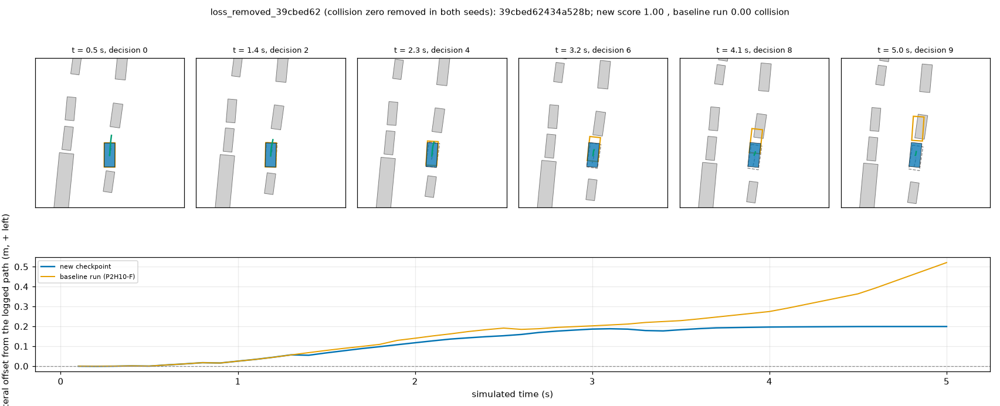
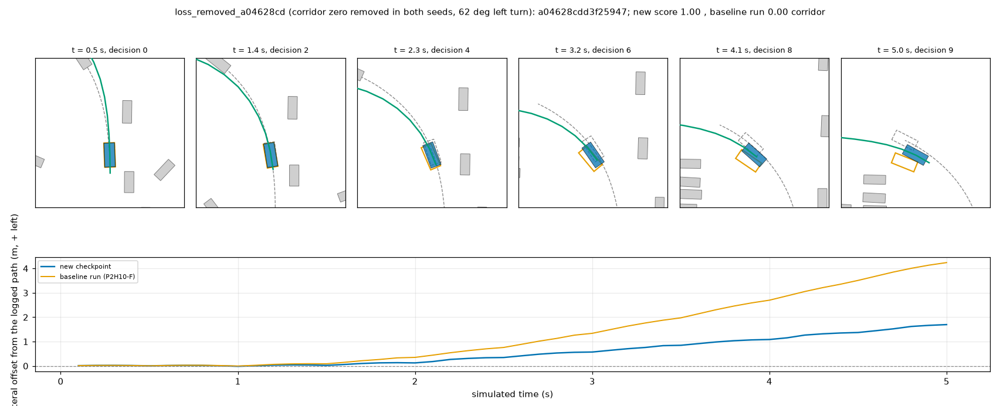
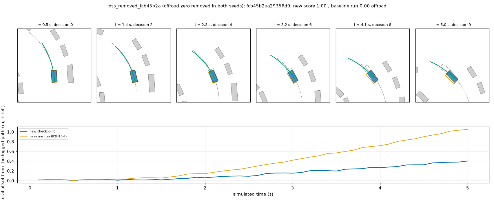
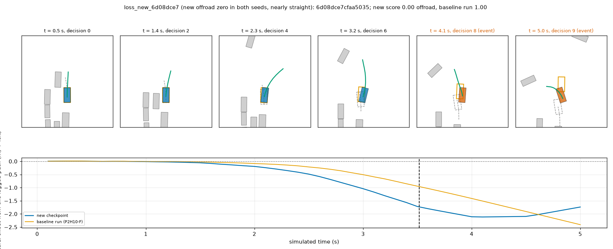
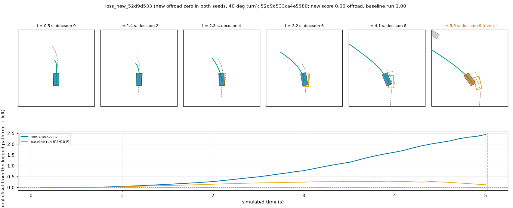
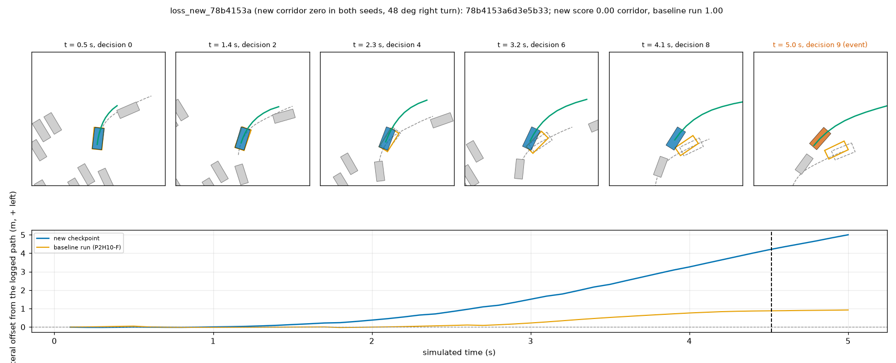
去掉的 zero 正是课要解决的（向物体或弯内侧的漂移）；两 seed 都重现的 4 个新增 zero 里看过图的 3 个是偏移在转弯或直路上增长、与物体无关：这个臂把一部分漂移挪到了另一侧而不是消掉。
experiments/body1/results/progress_diagnosis.md，决策 230。| 状态 | n | 全部 | open | lead |
|---|---|---|---|---|
| navtest on-log（从未训练过；warp 帧重读） | 12 146 | 0.9985 [0.998, 0.999] | 0.9998 | 0.9931 |
| navtest，原读数（GIMM 帧，作废） | 12 146 | 0.9905 [0.989, 0.992] | 0.9931 | 0.9822 |
| hold logs on-log（imitation 行） | 10 926 | 0.9990 | 0.9994 | 0.9957 |
hold logs ot1 | 7 366 | 0.9900 | 0.9927 | 0.9785 |
hold logs yr1 | 7 366 | 0.9779 | 0.9853 | 0.9616 |
hold logs bd4 | 4 425 | 0.9391 | 0.9612 | 0.9271 |
base 两个 seed 之间的 floor 在 navtest 上是 0.9995（原读数 1.0003）。离 log 越远变短越重：imitation 行 0.999（有 logged target 顶住），ot1 1.0%、yr1 2.2%、bd4 6.1%。navtest 的 on-log 状态上不是全局变短：open 路段 0.9998 / 0.9995，变短只在 lead 后面（0.9931，占弧长差总和的 63 至 83%）与 contact 状态（0.9914）；原读数的「全局变短 0.7 至 1.8%」是读错帧造成的。launch（< 1 m/s）0.995 / 1.001。
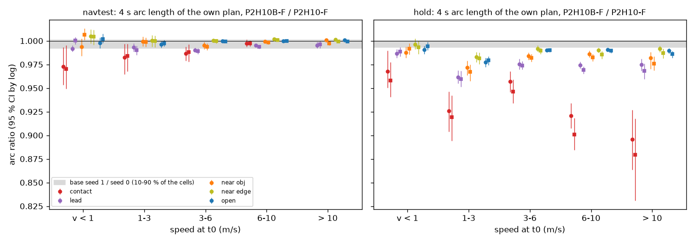
| scene | 对数 | progress 臂 − base [95% CI，按 log] | 占损失 | 满分 → 偏慢 | 偏慢 → 满分 | served plan 弧长比（全部决策） |
|---|---|---|---|---|---|---|
| 全部 | 1 400 | −0.0145 [−0.0203, −0.0085] | 100% | 78 | 23 | 0.976 |
| lead | 316 | −0.0314 [−0.0407, −0.0238] | 49% | 34 | 3 | 0.944 |
| open | 698 | −0.0105 [−0.0171, −0.0040] | 36% | 28 | 16 | 0.983 |
| 转角 < 10° | 994 | −0.0184 [−0.0242, −0.0128] | 90% | 57 | 16 | 0.969 |
| 转角 > 45° | 122 | −0.0182 [−0.0412, +0.0019] | 11% | 9 | 0 | 0.987 |
lead 与 open 两行按 warp 帧上的 base plan 重新分组（原分组：lead 318 对、−0.0296、46%；open 658 对、−0.0099、32%、0.986），读法不变。lead 后面 plan 短 4 至 6%，lead scene 占 pair 的 23%、占损失的 49 至 50%；lead scene 上零分 9 → 3，偏慢 61 → 95。base 两个 seed 之间「满分 → 偏慢」的 floor 是 10 / 17，所以 78 对 23 在噪声之外。
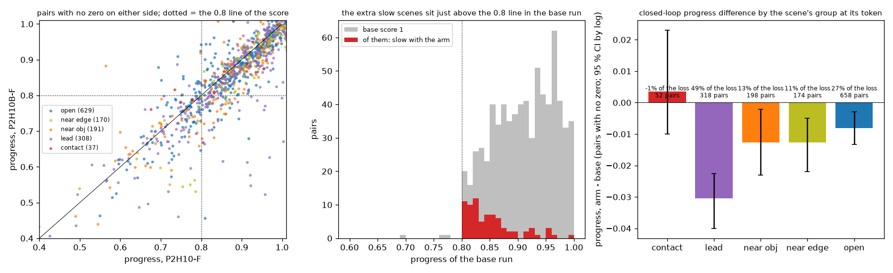
hinge 对 plan 8 个 pose 的梯度在 plan 自己的 heading 系里拆开（训练 log 的行）：agent hinge 在 imitation 行上 96% 的正例行梯度向后、每 batch 的弧长拉力 −0.0022，hinge-only 行上 84 至 88% 向后；同一路径缩到 0.75 弧长就能清零 76%（imitation 行）。road hinge 97 至 99.5% 是横向梯度，弧长拉力约 +0.0001。imitation 行有 logged target 顶住所以弧长没动，hinge-only 行没有反向项所以短了 1 至 6%。hinge-only 行上 A 与 road hinge 各占多少，当时没有分开（drop-one 当时未训，见第十节）。
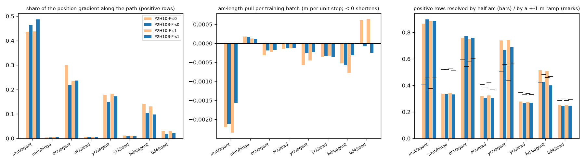
16 个 pair（11 个 scene）里 13 个在 open 路段、9 个 > 45°，开环弧长不短（0.92 至 1.02，中位 1.00）：把 plan 从内侧边缘推开，去掉了切内角，同时在 48 至 70° 的弯上造出 corridor / offroad 零分。> 45° 桶的 −0.0207 = 零分翻转 −0.0141（新 9、去 7）+ progress −0.0066，这个桶内是 trade，净值约 0。项 C 的栅格没有推这些 plan：6 个新 offroad pair 沿轨迹在两张栅格上的余量全部相同。
experiments/body1/results/stage2_p0.md，决策 231。| 读数（CARLA 帧） | CARLA | navtrain 同一读法 | 登记线 | 结果 |
|---|---|---|---|---|
| D2：接触头 boundary AUC（own plan，speed ≥ 0.5 m/s） | 0.844 [0.829, 0.860] | hold 0.978 | ≥ 0.80，比不看画面的头高 0.05 | 过（比不看画面的头高 0.151） |
| D2：agent AUC | 0.589 [0.574, 0.604]（不看画面 0.569） | hold 0.905 | ≥ 0.75 | 不过，class 1 去掉 |
| D1(b)：起步比例（站着而 expert 将要起步的行） | 0.241 | 0.995 | ≥ 0.6 × navtrain | 不过 |
| D1(d)：直路 own-plan 出界率 | 2.38% [2.10, 2.68] | 0.21% | ≤ 3 ×（0.63%） | 不过（事后：expert 自己的 future 在同一栅格上就有 1.05%，这条线在该 cache 上量不准；线没有改） |
| P0-E：6 条 route 的不可解释站立 / 全部 tick | 现状 0.431；两处 port 修正后 0.620（站立占比 0.863 / 0.866） | - | < 0.20 且 ≥ 5 条 route < 0.30 | 不过 |
没有线的读数：own plan 的 4 s 转角只有 expert 的 0.54（转弯行）与 0.28（> 45°），navtrain 上是 0.99 / 0.97，转向方向对（0.838）但幅度远不够；直路行上 own plan 撞 lead 14.8%（navtrain 0.27%）。含义：student 在 CARLA 里的转向和起步都不是它在榜上的行为，「our student in the loop」生成的行不是榜上那个 student 的行；corridor 类（第 227 条的 15 个 route 零分）原定由 stage 2 的行来教，现在没有数据来源。
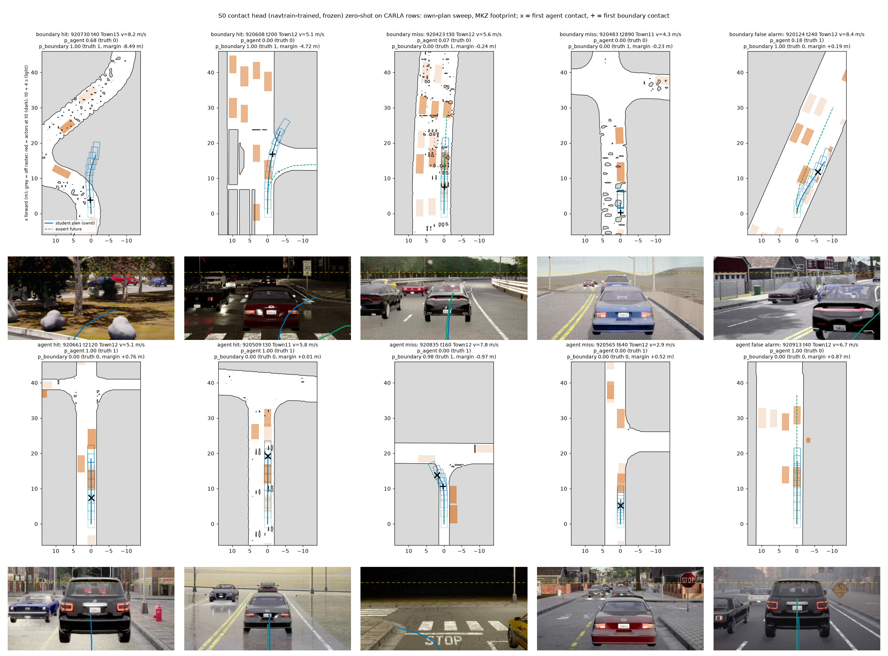
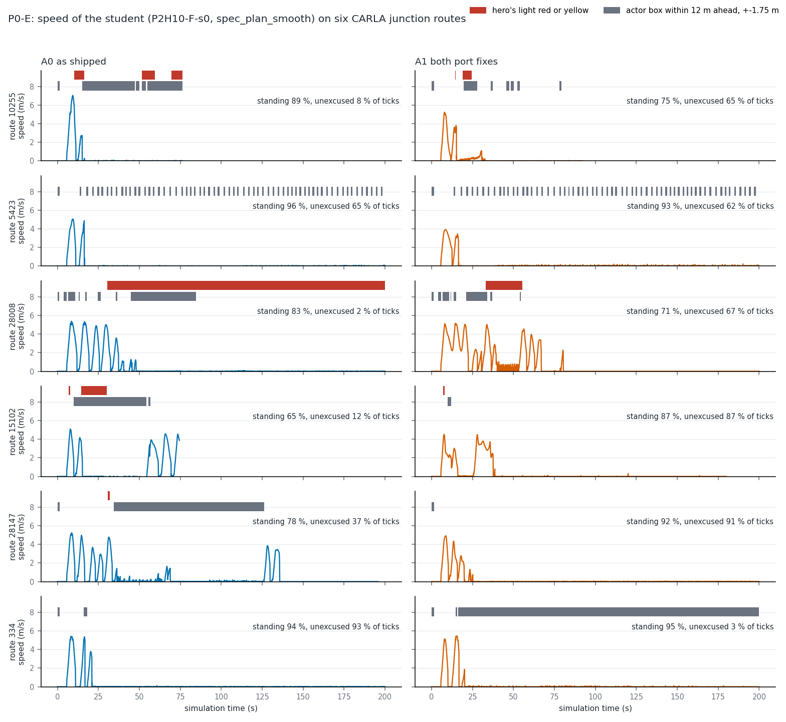
P2H10S（决策 232）experiments/body1/results/shape_pilot.md，决策 232。| 读数 | 线 | seed 0 | seed 1 | 结果 |
|---|---|---|---|---|
| pilot：agent / boundary（对关掉新项的 pilot） | 降 ≥ 30% / 25% | −37.1% / −33.8%，CI 均不含 0 | 过 | |
| pilot：4 s 弧长比 pooled / open | ≥ 0.995 | 0.9989 / 1.0004（Amendment 5 的 pilot：0.9863 / 0.9913） | 过 | |
| (a) hold logs agent / boundary | 降 ≥ 30% | −39.7% / −49.5% | −37.7% / −49.1% | 过 |
| (b) navtest on-log agent 正例（12 146 个 token；warp 帧重读） | 不升 | 135 对 140 | 132 对 142 | 过 |
| (b) 原读数（GIMM 帧，作废） | 不升 | 149 对 148 | 138 对 144 | 当时读成 seed 0 不过 |
| (c) 续接斜率 alpha_05 | ≤ base + 0.05 | 0.822 对 1.028 | 0.830 对 1.037 | 过 |
| (d) navtest EPDMS（两 seed 均值） | ≥ base − 0.3 | 89.05 对 88.67（+0.38） | 过 | |
(e) 4 s 弧长比 navtest / lead / bd4 | 各自的线 | 1.0017 / 1.0007 / 0.9991（原 0.9996 / 0.9969） | 1.0008 / 1.0004 / 0.9989（原 0.9984 / 0.9959） | 过 |
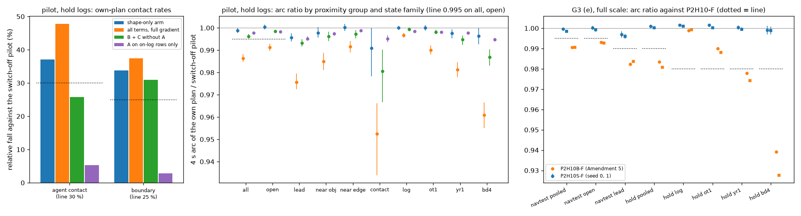
代价：没有 timing 之后，navtest on-log 的 agent 接触率不再下降（warp 帧上 P2H10S 降 3.6% / 7.0%，CI 含 0；上一配方降 17.9% / 16.2%，CI 不含 0），上一配方在 navtest 上 NC / TTC 的增益消失，EP 回到 base；留出 log 上 agent 降幅保住约五分之四、出界约十分之九。pilot 规模的 drop-one：「B + C 不带 A」仍变短（弧长 0.9963，bd4 0.9868）且保住 agent −25.8% / boundary −30.9%，所以第八节说的「向后拉的是 agent hinge」只对大部分成立；「A 只放在 on-log 行」只缩 0.2%、两个接触率基本不动（−5.3% / −2.9%），效果来自离轨的 hinge-only 行。
为读本臂新训了 P2H10-F-s{2,3} 并在同一 driver、同一 chunk 列表上跑 700 scene：
| driver | 均分 [95% CI，按 log] | zeros | 碰撞 | slow | 均 progress |
|---|---|---|---|---|---|
| P2H10-F-s0 | 0.9468 [0.9252, 0.9652] | 26 | 8 | 112 | 0.942 |
| P2H10-F-s1 | 0.9495 [0.9300, 0.9669] | 23 | 6 | 105 | 0.936 |
| P2H10-F-s2 | 0.9498 [0.9287, 0.9685] | 24 | 7 | 100 | 0.939 |
| P2H10-F-s3 | 0.9446 [0.9222, 0.9639] | 25 | 7 | 117 | 0.932 |
把一个 base seed 当作臂读另一个（12 个有序配对）：均分差 −0.0052 至 +0.0052，CI 半宽平均 0.0078，L2 过 4 个，L3 过 9 个，四条线全过 2 个。含义：700 scene × 2 seed 上「下界 > −0.005」对一个与 base 相同的模型也多半不过，第七节 L2 的写法 power 不足。对照这个 spread，第七节里偏慢 277 对 217 与「满分 → 偏慢」78 个在噪声之外（base 每对最多 22），零分 44 对 49 与 L2 点估计 −0.0046 在噪声之内。
P2H10S 的 4-seed 闭环描述性读数（补记 6 note (i)）P2H10S 在 G3 (b) 处停止之后做的描述性闭环读数（那次 G3 (b) 的读数已更正为过线，见页首；本节仍是描述性读数），不是登记读数，不能使本臂晋级；700 个 scene 全是本 lane 的 development scene。P2H10S-F-s{0,1,2,3} 在不带 BODY1 开关的 nuPlan driver 上跑 700 scene，对四个 base seed：均分 0.9517 对 0.9477（按 seed 配对 +0.0040 [−0.0038, +0.0134]，base 自己的 12 个有序配对给出 −0.0052 至 +0.0052，在其内）；zero 90 对 98，但按类分开方向相反：at-fault 碰撞 18 对 28、offroad 35 对 42（均在 base 全部 12 个 seed 配对之外），corridor 37 对 28（同样在 12 个之外）。corridor 是代价：按 3-of-4 规则的 4 个新增 zero 全是 48 至 70° 右转上的 corridor zero，> 45° 桶 zero 43 对 33（均分 −0.0326 [−0.0858, +0.0200]）。第八节里 Amendment 5 那个臂的 progress 损失没有出现：偏慢 401 对 434，均 progress +0.0091。driver 仍是 P2H10-F。来源：experiments/body1/results/shape_closed_loop.md，表 results/shape/cl/。| Driver | 均分 [95% CI，按 log] | score 1 | zeros | 碰撞 | offroad | corridor | slow | 均 progress |
|---|---|---|---|---|---|---|---|---|
| P2H10-F-s0（TR1） | 0.9468 [0.9252, 0.9652] | 562 | 26 | 8 | 10 | 8 | 112 | 0.942 |
| P2H10-F-s1（TR1） | 0.9495 [0.9300, 0.9669] | 572 | 23 | 6 | 10 | 7 | 105 | 0.936 |
| P2H10-F-s2 | 0.9498 [0.9287, 0.9685] | 576 | 24 | 7 | 11 | 6 | 100 | 0.939 |
| P2H10-F-s3 | 0.9446 [0.9222, 0.9639] | 558 | 25 | 7 | 11 | 7 | 117 | 0.932 |
| P2H10S-F-s0 | 0.9486 [0.9305, 0.9647] | 568 | 24 | 4 | 10 | 10 | 108 | 0.946 |
| P2H10S-F-s1 | 0.9482 [0.9278, 0.9667] | 576 | 25 | 5 | 11 | 9 | 99 | 0.944 |
| P2H10S-F-s2 | 0.9538 [0.9403, 0.9675] | 576 | 21 | 5 | 7 | 9 | 103 | 0.947 |
| P2H10S-F-s3 | 0.9562 [0.9413, 0.9694] | 589 | 20 | 4 | 7 | 9 | 91 | 0.949 |
| P2H10B-F-s0（Amendment 5） | 0.9441 [0.9238, 0.9617] | 541 | 22 | 5 | 10 | 7 | 137 | 0.928 |
| P2H10B-F-s1（Amendment 5） | 0.9430 [0.9234, 0.9599] | 538 | 22 | 4 | 11 | 7 | 140 | 0.921 |
四个 seed 的均值，base / 臂：均分 0.9477 / 0.9517，zeros 24.5 / 22.5，碰撞 7 / 4.5，offroad 10.5 / 8.75，corridor 7 / 9.25，slow 108.5 / 100.25，progress 0.9375 / 0.9467。臂的碰撞（4 至 5）与 corridor（9 至 10）的 seed 范围和 base 的（6 至 8、6 至 8）不重叠。按 scene 配对、seed 序号对应（CI 按 log）：s0 +0.0018 [−0.0054, +0.0102]，s1 −0.0013 [−0.0101, +0.0091]，s2 +0.0040 [−0.0079, +0.0173]，s3 +0.0116 [−0.0001, +0.0272]。臂的 seed 2、3 比 seed 0、1 高 0.005 至 0.008，臂自己的 seed 间距（0.0080）比 base 的（0.0052）还大，与效应同量级。
四条线只做算术，「过」不等于晋级。null 有两套：N1 = base 四个 seed 的 12 个有序配对（每个一对）；N2 = 12 个不相交的 2 对 2 划分（每个两对）。统计量按对数归一，四对均值对单对 null 是偏保守的比较；只有越出 N1 和 N2 的全部成员才称「在 base 的 seed spread 之外」。
| 读法 | (seed, scene) 对 | L1a 碰撞 + offroad + corridor | L1b 碰撞 + offroad | L2 均差 [95% CI，按 log] | L3 slow（上限 1.1 × base） |
|---|---|---|---|---|---|
| S seed 0–1 对 TR1 | 1 400 | 不过：49（9 / 21 / 19）对 49（14 / 20 / 15）；逐 seed 24、25 对 26、23 | 过：30 对 34 | 不过：+0.0003 [−0.0060, +0.0078] | 过：207 对 238.7（base 217） |
| S 四 seed，按序号配对 | 2 800 | 不过：90（18 / 35 / 37）对 98（28 / 42 / 28）；逐 seed 24、25、21、20 对 26、23、24、25 | 过：53 对 70 | 过：+0.0040 [−0.0038, +0.0134] | 过：401 对 477.4（base 434） |
| B（Amendment 5）seed 0–1，对照 | 1 400 | 过：44 对 49 | 过：30 对 34 | 不过：−0.0046 [−0.0131, +0.0052] | 不过：277 对 238.7 |
| 统计量（每对，臂 − base） | seed 0–1 对 TR1 | 四 seed | N1 范围 | N2 范围 | 四 seed 值是否在 spread 之外 |
|---|---|---|---|---|---|
| L2 均差 | +0.0003 | +0.0040 | −0.0052 至 +0.0052 | −0.0040 至 +0.0040 | 否：越出 N2、没越出 N1 |
| L2 CI 下界 | −0.0060 | −0.0038 | −0.0138 至 −0.0004 | −0.0085 至 +0.0004 | 否 |
| L1a zero 数 | +0.00 | −2.00 | −3.0 至 +3.0 | −2.0 至 +2.0 | 否 |
| L1b zero 数（碰撞 + offroad） | −2.00 | −4.25 | −2.0 至 +2.0 | −1.0 至 +1.0 | 是，低于全部 24 个 |
| at-fault 碰撞 zero | −2.50 | −2.50 | −2.0 至 +2.0 | −1.0 至 +1.0 | 是，低于全部 24 个（seed 0–1 上同样） |
| offroad zero | +0.50 | −1.75 | −1.0 至 +1.0 | −1.0 至 +1.0 | 是，低于全部 24 个 |
| corridor zero | +2.00 | +2.25 | −2.0 至 +2.0 | −1.0 至 +1.0 | 是，高于全部 24 个 |
| 偏慢 scene | −5.0 | −8.2 | −17 至 +17 | −12 至 +12 | 否 |
| 均 progress | +0.0060 | +0.0091 | −0.0097 至 +0.0097 | −0.0066 至 +0.0066 | 否：越出 N2、没越出 N1 |
同一配方的 base 配对读成「过」的频率（各 12 个）：N1 里 L1a 6、L1b 3、L2 4、L3 9、四条全过 2；N2 里 L1a 3、L1b 6、L2 4、L3 10、四条全过 2。所以 L2、L3 对本臂读成「过」几乎不带信息；带信息的是按类的移动：碰撞与 offroad 下降、corridor 上升，各自在 base 全部配对之外，L1a 把它们抵消了（−17 和 +9）。Amendment 5 的臂在偏慢（每对 +30）和 progress（−0.0145）上在 spread 之外，本臂不在。
去掉 = 在至少 3 个 base seed 里是 zero 且在至多 1 个臂 seed 里是 zero，新增反之。去掉 5 个（碰撞 2、offroad 2、corridor 1）：80f6c94f、994ab680（碰撞）、fcb45b2a、00ff8eeb（offroad）、927b73fe（corridor）；新增 4 个，全是 corridor、臂 4 个 seed 全 zero 且 base 4 个 seed 全不是：78b4153a（右转 48°）、77155a60（67°）、e933d70d（70°）、52d3f15d（55°）。四个 seed 都是 zero 的 scene：base 20 个、臂 17 个。这 9 个翻转全部也是 Amendment 5 那个臂的翻转（去掉的 5 个在它两个 seed 里都去掉，新增里 78b4153a 与 77155a60 两个 seed 都新增，e933d70d 与 52d3f15d 各出现在一个 seed）。该规则没有 base 对 base 的类比（需要 4 对 4），所以翻转数没有 null；作参照，base 的 12 个有序配对在单对上各有 1 至 5 个去掉与 1 至 5 个新增。
| 分组（scene 的 navtest token，base plan 的 proximity 组） | scene 数 | base / 臂 均 progress | 每对差 [95% CI，按 log] | N1 / N2 范围 | 偏慢（四对之和）base → 臂 | 是否在 spread 之外 |
|---|---|---|---|---|---|---|
| lead | 159 | 0.919 / 0.930 | +0.0115 [+0.0038, +0.0203] | ±0.0203 / ±0.0128 | 137 → 137 | 否 |
| open | 329 | 0.945 / 0.952 | +0.0078 [+0.0032, +0.0126] | ±0.0058 / ±0.0038 | 190 → 164 | progress 高于全部 24 个；偏慢否 |
Amendment 5 的臂在同一拆分上 lead −0.0296、open −0.0099（第八节）；形状-only 的臂不在 lead 后面变慢，progress 高于 base，open 上最明显。
| > 45° 桶（61 个 scene、20 个 log） | 均分 | zeros | 碰撞 / offroad / corridor |
|---|---|---|---|
| P2H10-F s0 / s1 / s2 / s3 | 0.8143 / 0.8544 / 0.8682 / 0.8443 | 10 / 8 / 7 / 8（33） | 6 / 19 / 8 |
| P2H10S-F s0 / s1 / s2 / s3 | 0.8233 / 0.7578 / 0.8244 / 0.8453 | 10 / 14 / 10 / 9（43） | 5 / 21 / 17 |
| P2H10B-F s0 / s1 | 0.8298 / 0.7973 | 9 / 11 | 2 / 11 / 7 |
臂减 base，四 seed 按序号配对：均分 −0.0326 [−0.0858, +0.0200]，zero 每对 +2.50。同一桶的 null：均差 N1 ±0.0539、N2 ±0.0320；zero 每对 N1 ±3.0、N2 ±1.5。均差在 spread 之内，zero 越出 N2 但没越出 N1，不算在 spread 之外。这个桶里 corridor 17 对 8 就是上面 4 个新增 zero 的全部。
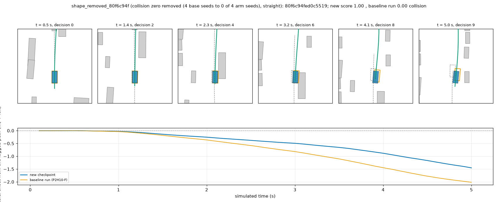
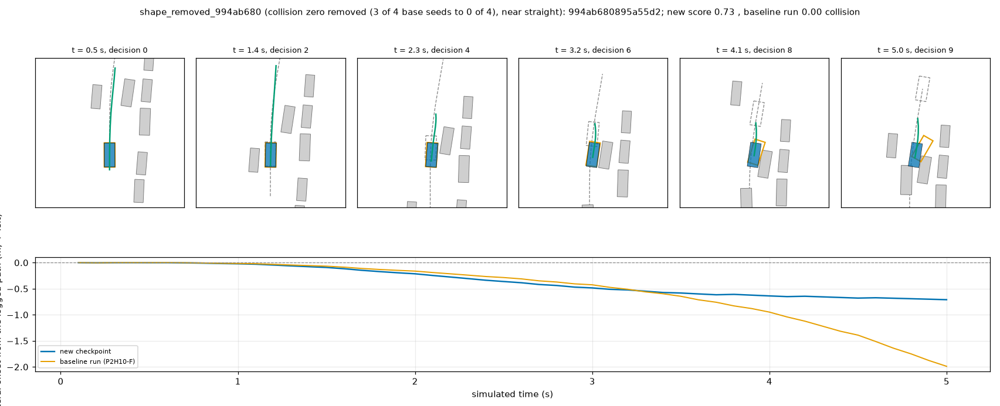
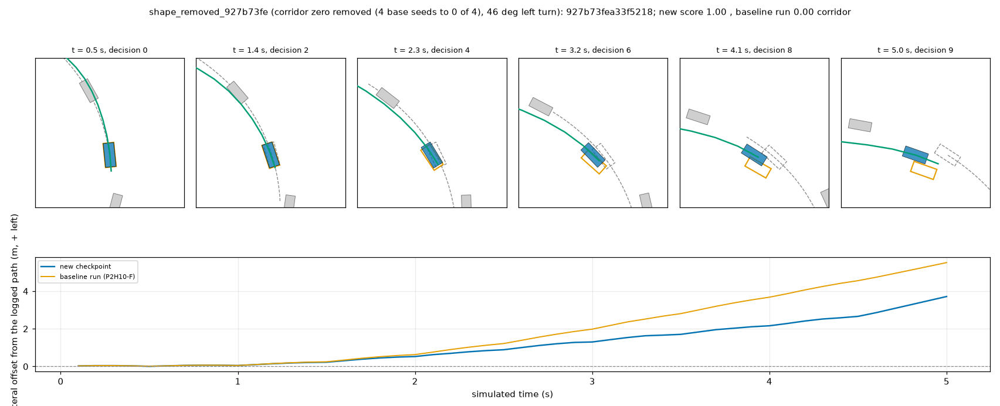
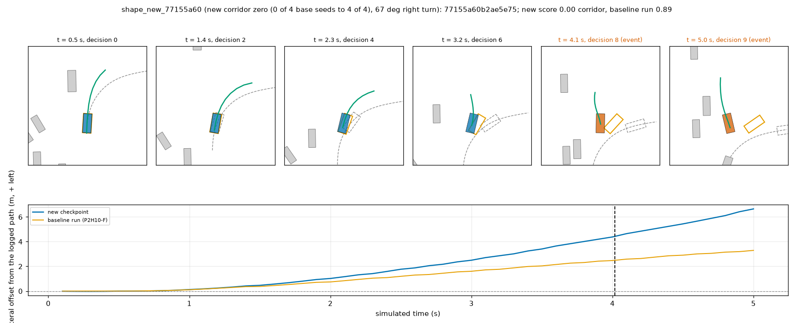
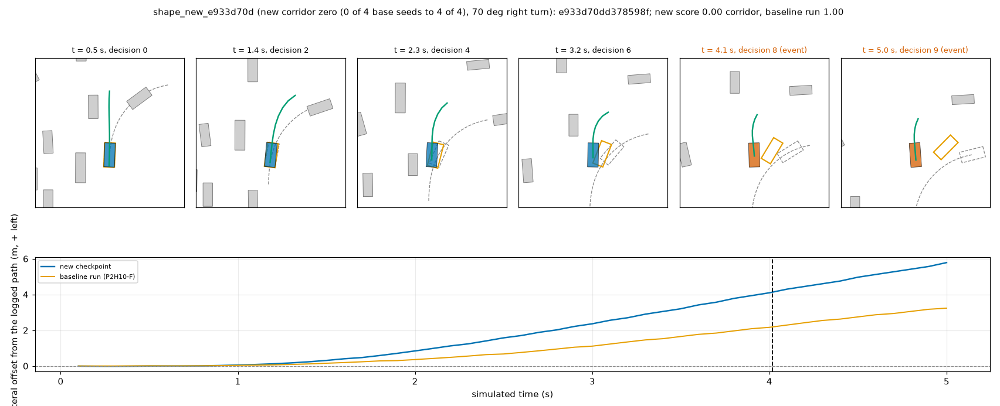
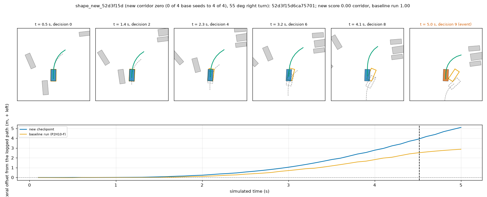
去掉的 zero 是 clearance 课要解决的漂移（图三十三、三十四）或留在 corridor 内的弧（图三十五）；新增的 zero 是 48 至 70° 右转上 plan 转得不够、与物体无关：这与 Amendment 5 的新增 corridor zero 是同一个副作用，只是现在没有 progress 损失。
成本与限制。12 个 chunk job 加 pilot8 与图的重跑约 3.0 card-h（预算 4）、job 墙钟约 35 min，盘 2.4 GB。pilot8：8 / 8 rollout 完成，均分 0.9773 对 TR1 同 scene 的 0.9736，五个相同。限制：描述性读数、development scene、四个 seed 和 27 个 log；P2H10-F-s{0,1} 是 2026-10-06 的 TR1 训练、其余在当天 checkout 上训练；null 的 N2 与逐对归一是本读数加的；> 45° 桶只有 20 个 log；这一读数不回答 G3 (b)（navtest 上 agent 接触率）为什么差一个 token。
P2H10R 停在 pilot gate（决策 234）P2H10S 上加一项「own plan 到 logged path 的距离超出 dead band 的部分」的 hinge，目标是去掉 48 至 70° 弯上的走宽。pilot gate 的 corridor 线不过：band 取 2.5 m 时，navtest 上 > 45° 的 token 里 plan 偏到 logged path 外侧 2 m 以上的有 138 个对关掉新项的 pilot 的 110 个（线：至多 +5；P2H10S-P-s0 为 141；warp 帧重读，原读数 67 对 54、75，判定不变），留出 log 的 on-log 弯道行为 12 对 10（线：至多 +1；P2H10S-P-s0 为 15）。接触线、弧长线、dev ADE、斜率全过（agent −40.2%、boundary −33.8%）。按登记变体到此结束：没有 full run、G3、闭环、navtest bench、PAI。来源：experiments/body1/results/route_pilot.md，决策 234。1 seed，pilot 规模。P2H10S 的 own plan 在 > 45° 的弯上整体外移：4 s 处比同 seed 的 base 靠外 navtest +0.09 [+0.05, +0.14] / +0.15 [+0.12, +0.19] m（seed 0 / 1；原读数 +0.18 / +0.27），bd4 行 +0.31 / +0.39 m；偏到外侧 2 m 以上的 token 116 / 118 / 119 / 126 对 base 的 84 / 79 / 87 / 91（原读数 58 / 65 / 59 / 65 对 45 / 46 / 47 / 49）。不分侧的「离开 4 m 管道」分不开两者，所以登记的线用外侧 2 m。P2H10S-P-s0 为 +0.42 m，关掉新项的 pilot 为 +0.31 m（+ 为外侧；原读数是 −0.29 / −0.36 / −0.48 m，符号相反，是读错帧造成的）。1.5 m 的 band 开始咬到外移，但 dev ADE 超限，等于一个横向 target（决策 212、213 警告过的区域）。pilot gate 的线（P2H10R-Pb25-s0 对 P2H10-P-s0） | 值 | 线 | 结果 |
|---|---|---|---|
| own-plan agent 接触率（hold） | −40.2% | ≥ 30% | 过 |
| own-plan boundary 率（hold） | −33.8% | ≥ 25% | 过 |
| dev ADE（m） | 0.5949 对 0.5913 | ≤ +0.01 | 过 |
| 续接斜率 alpha_05 | 0.851 对 1.079 | ≤ +0.05 | 过 |
| (C-a) navtest > 45° 外侧 2 m 以上的 token（1 517） | 67 对 54 | ≤ 参考 + 5 | 不过 |
| (C-b) on-log 弯道行（207） | 12 对 10 | ≤ 参考 + 1 | 不过 |
| (C-c) 离开 4 m 管道，navtest / hold 弯道行 | 31 对 47 / 10 对 27 | ≤ 参考 + 5 / + 1 | 过 |
含义：第 233 条的走宽是每个 plan 几十厘米的外偏在闭环里累积出来的；在这套行上，「不蹭内侧边缘」的课与「沿 route 走」不能靠到 log 的距离 hinge 分开。W2 能否预测闭环 corridor zero 没有被检验（没有 P2H10R checkpoint 进过 simulator）。本 lane 对留出 log 已在 pilot 规模读过四次；loss 臂不再有变体，大弯缺的是 route 能力本身，需要不以 log 距离为形式的约束。
P2H10S 与 base 在 PAI 60 scene 上的描述性读数（补记 6 note (j)，决策 235）P2H10S 0.2780（按 seed 配对 +0.0755 [+0.0216, +0.1363]）；PAI 的 serving 下：base 0.3545，P2H10S 0.4211（+0.0667 [−0.0077, +0.1479]）。对 base 自己的 seed spread（最大 base 对 base 差：plain 0.0957，served 0.0292）：plain 的差在 spread 之内，served 的差在其外，但 CI 含 0。P2H10B（2 seed）：plain 0.2615（+0.0465 [−0.0256, +0.1249]），served 0.4291（+0.0665 [−0.0108, +0.1509]）。所有均值、配对差与 CI 在逐 scene 重算后没有变化。来源：experiments/body1/results/pai_descriptive.md、results/pai/pai_decomposition.md，决策 235。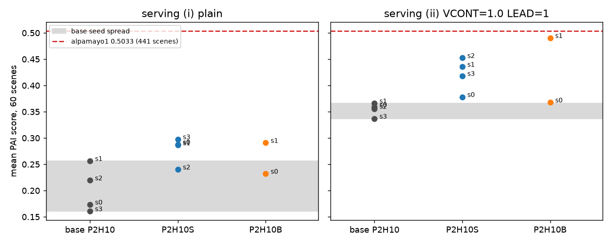
P2H10S 的四个 seed 和 P2H10B 的两个 seed 都在灰带之上（P2H10B s0 只高 0.002），没有一个到达 alpamayo1 的虚线（0.5033，441 scene，样本不可比）；左图（plain）六个臂点里四个在宽灰带之上。决策 235 第 2 点把「零分构成」表读反了：表里每一对行都是先 base 后臂，臂在每一类上零分都更少、progress 更高，所谓「均分更高但零分更多」的不一致不存在。报告本身有三处不清楚，已改：(1) 类别列是互斥的（优先级 at-fault 碰撞 > offroad > corridor，同时 offroad 和 corridor 的 scene 记为 offroad），所以「corridor zero 少一到三个」不是 corridor 的效应，按原始 flag 计 corridor 只动 0.5 个（plain 19.0 → 18.5，served 17.75 → 17.25）；(2) progress 列对所有 rollout 取均值，包含失败的，不是分数用的量；(3) driver 异常是 1 200 个 rollout 里的 9 个（plain 5、served 4），不是 960 里的 8 个，而且 served 下全部落在 base 一侧。
PAI 的 scene 分数 = 0（只要 at-fault 碰撞、offroad、left corridor 任一被设）否则 min(clamp(progress_clipped_rel, 0, 1) / 0.8, 1)。flag 会重叠（1 200 个 rollout 里 offroad + corridor 52 个，碰撞 + corridor 1 个，碰撞 + offroad 0 个）。
| serving | 家族 | zeros | 非零 scene | 非零 scene 均分 | 非零 scene 的 progress | 全部 rollout 的 progress | driver 异常 |
|---|---|---|---|---|---|---|---|
| plain | base（4 seed） | 43.25 | 16.75 | 0.724 | 0.666 | 0.54 | 0.25 |
| plain | P2H10S（4） | 36.75 | 23.25 | 0.718 | 0.653 | 0.58 | 0.75 |
| served | base（4） | 31.25 | 28.75 | 0.741 | 0.670 | 0.60 | 1.00 |
| served | P2H10S（4） | 27.75 | 32.25 | 0.783 | 0.718 | 0.64 | 0.00 |
每个 seed 对的均分差 = (gain + loss + change) / 60：gain = base 为 0、臂非零的 scene 上臂的分数和；loss = base 非零、臂为 0 的 scene 上 base 分数和的负值；change = 两者都非零的 scene 上的分数差之和。
| serving | 家族（对数） | 差 | 0 → 非零（个） | 非零 → 0（个） | 两者非零（个） | gain | loss | 两者非零的变化 |
|---|---|---|---|---|---|---|---|---|
| plain | P2H10S（4） | +0.0755 | 7.75 | 1.25 | 15.50 | +0.0950 | −0.0188 | −0.0007 |
| plain | P2H10B（2） | +0.0465 | 7.00 | 3.50 | 14.00 | +0.0979 | −0.0499 | −0.0015 |
| served | P2H10S（4） | +0.0667 | 7.25 | 3.75 | 25.00 | +0.1071 | −0.0477 | +0.0073 |
| served | P2H10B（2） | +0.0665 | 6.50 | 3.00 | 26.00 | +0.1020 | −0.0351 | −0.0004 |
P2H10S 每个 seed 净少 6.5（plain）和 3.5（served）个零分 scene；救回的 scene 平均得分约 0.74（plain）和 0.89（served），丢掉的约 0.90 和 0.76。两者都非零的 scene 上分数几乎不变（−0.0007 / +0.0073）：臂没有在 base 已经开过的 scene 上开得更好。P2H10S 为 0。按非零 scene 约 0.74 的分数，这约占 served +0.0667 里的 4 × 0.74 / 240 = +0.012；plain 下方向相反（base 1，P2H10S 3）。异常是 device mismatch 崩溃，与 checkpoint 无关，仍按零分计入。75c23f0 两处都有），共 7 个不同的 scene（8 条记录里 base 的零分 flag：offroad 3 条，corridor 5 条）；非零 → 0 只有 served 的 94877a4（3 个 seed）。其余的增益是 seed 层面的变动，量级与 base 自己的 seed spread 相当。限制。60 scene 是难度分层样本，均分不能与 alpamayo1 的 441 scene 0.5033 比；每个 scene 一次 rollout；seed 只按序号配对，没有共享训练状态；P2H10B 只有两个 seed；P2H10S-F-s1 plain 的 3 个 stack 因 box 系统盘满（/tmp ENOSPC）重跑，首读 0.2133、重跑 0.2863，其余 stack 无此问题；base s0 / s1 复用 PAI2 与 FIX1 的同命令结果。
P2H10S 的增益是零分 scene 的减少（主要 offroad），不是已通过 scene 上的改进，也不是碰撞；served 下 base 多 4 个 driver 异常约占 +0.012（第十三节）。rp_direct.py）。首次直跑三个未绑核的 stack 同时起，线程池撞上容器 pid 上限，五个 rollout 评分失败，后改为每个 stack 绑 8 核、最多 2 个并行、评分失败重跑；pilot 是重跑的结果。alpasim/ot2/loss-pilot 下（已取消重复的 job，没有碰别的 lane 的 job）；补记 5 的 note (b)（新 offroad zero 对 car park / generic drivable area）没有逐个检查，项 C 不能排除是新 offroad zero 的成因之一；去掉 zero 的图是 seed 1 带日志的重跑（分数复现）。